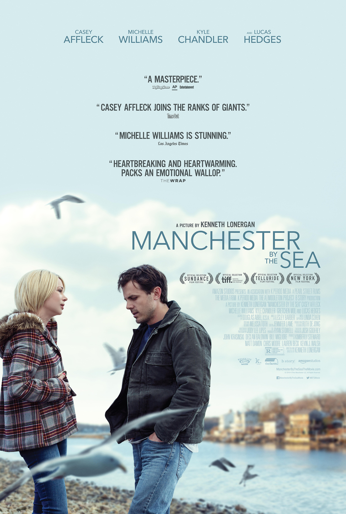

by Shu Wu February 28, 2023
Lee is a janitor who would seem to have no life desires or interests. He simply does his job and makes a living; he lives like a robot. He is like most people, except he is always alone, eats alone, walks alone, and has no emotions. Even though there are people who want to be a part of his life, he shows no interest, despite having a decent appearance and being quite charming. How could this be? It is necessary to go back a few years to his hometown, where he is a married man who lives happily with his wife and two children, brother, nephew and friends. But a terrible accident happened, and his children were killed in a fire. Lee has died since that time. He divorced and left his hometown, intending never to return to this gloomy and depressing place. But things have changed yet again. Lee's brother passed away and he wished he could adopt his son Patrick, but Lee refused. He returned to his hometown to handle his brother’s will. One day, he run into his ex-wife on the street, who is now remarried and pregnant. In my opinion, this is the most appealing (but sad) scene in the film. Although it was Lee's negligence that caused the accidents, but his ex-wife apologized him. Because she saw how miserable life Lee had been and he was stuck in the past, suffering from the pains. But she can move on because she is carrying new life, which allows her to have hope and joy again. As she knew she and Lee are the two people suffered this pain. Manchester by the Sea is a heartbreaking story about redemption and self-punishment. Some people believe that time heals most things, and that people can move on, but for some people, they cannot. The film is beautifully shot, with very delicate things/moments revealing the protagonist's past. The story is cold, disheartening, and desperate, but it appears that at the end, Lee makes some space for his life.
by Shu Wu February 29, 2023
Maudie is a biological drama film directed by Aisling Walsh that is based on the true story of painter Maud Lewis, who lived in Nova Scotia, Canada. One of Canada's most beautiful coastlines, the film is shot in Nova Scotia, where Maud lives, with the ocean, the cottage, the flower, and the cat becoming the artist's major objects in her paintings. Maud is a disabled person with rheumatoid arthritis, which has limited her hand mobility. After her parents died, she lived with her aunt until she met Everett Lewis, a fish fishmonger, and the two married soon after. Maud began bringing her cards to sell in earnest when she went to the fish market with her husband; her husband encouraged her to paint; they lived in poverty, so she found anything she could paint on, on the window, on the wall, even on their house; she then became more reputable, and people came to buy her paintings. Her paintings are so vivid with bright colors and patterns, just like the beautiful scene in the movie, and these paintings are cheerful and colorful came from a little woman who is disabled and lives in poverty, which offer a nostalgic and optimistic vision of her life. Some of my favorite scenes from the film include her husband using the wheel cart to transport her and the background with the ocean. In addition, I appreciate how the movie depicts how she focused on drawing her paintings. The movie Maudie is brilliantly done and warmly acted by Sally Hawkins and Ethan Hawke.
by Shu Wu February 29, 2023
Adam Driver, who is one of the best actors in recent years, stars in the Jim Jarmusch-directed film Paterson. The film is incredibly delicate, soft, and smooth; there are no major conflicts, no ups and downs, and no drama. It is about Paterson, a bus driver and poet who also resided in a Paterson-named town. The focus of the film was on Paterson's routine as a bus driver and his day-to-day life, but he is also a poet. Even the tiniest things can trigger his emotion, which inspired him to write a beautiful poem. He is constantly observing and paying attention to details in his life. He carried a notepad and a pen. One of the movie's more intriguing scenes has Paterson being able to overhear discussions in a bus while the cameras are focused on three different groups of people, including two young boys, two workers, and two college students. The director's focus on showing these scenes in the movies was very interesting; it not only explains to the audience where Paterson found the ideas and sources for his writing but also illustrates how we all live in a world like this, speaking and writing, fact and story, in everyday life; Paterson chose to write in the elegant words and sentences. Another interesting moment in the film is when it seems like there are twins of the elements everywhere; this took place after Paterson's girlfriend told him he had a dream about twins. I think that’s because since then he paid attention to the twins that’s why he felt like he has seen so many twins in town. I also think it is a way that the director staged the scene to reflect his imaginations. The film was a portrayal of beauty, with beautiful words and images.